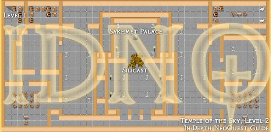

NeoQuest II Maps
Helping you find your way around NeoQuest II...
Meridell | Terror Mountain | Lost Desert | Haunted Woods | Faerieland
| Temple of the Sky, Level 2  Get to Silicast and fight him. Then, take the teleporter back the the palace. | ||
|


Available maps for this act:
- Lost Desert (overall): A bird's eye view of the whole Lost Desert. (The medallion piece and the gemstone positions are correct. If you can't get them, you haven't completed related quests)
- Sakhmet City: Get me the weather control device.
- Lost Desert, South: You start in Sakhmet, continue to the Temple of the Sky, then the Ruined Temple. Do not stray towards the pyramid until you've gotten that quest.
- The huts: This is a compound map. The hut positions are correct relatively to each other. You will be dumped into another map when you exit a hut.
- Temple of the Sky, Level 1: Nothing special - and you can skip most of the level.
- Temple of the Sky, Level 2: Get to Silicast and fight him. Then, take the teleporter back the the palace.
- Ruined Temple, Level 1: Up you go.
- Ruined Temple, Level 2: It's funny how the foundation is destroyed, and the tower is OK.
- Ruined Temple, Level 3: Oooh, look, it's a maze.
- Ruined Temple, Level 4: You're finally here. Now, defeat the ressurected Krawk, and back to the palace you go.
- Lost Desert, North West: Before you can collect the 2nd piece, you have to rescue lifira from the Palace of Ancient Kings, talk to her in waset village, and talk to the hermit after that.
- Waset Village: Don't forget to pick up Velm. (Rescue the librarian and get a discount (which by then would be quite useless))
- Valley of Kings: The entrance to the valley is slightly North-West of Waset Village.
- Palace of Ancient Kings, Level 1: "the bed", as explained in the journal entry (can be picked up by fighting dynastic priests), is an entrance to the underground passage.
- Palace of Ancient Kings, Level 2: Just fight the big and ugly monster to rescue the librarian.
- Lost Desert, East: Fairly straighforward.
- Akhten-Ka: Fight Coltzan, and then talk to him for the piece of the medallion.
- Zakharukh's Pyramid, Level 1: It's all a big maze.
- Zakharukh's Pyramid, Level 2: Slightly simpler.
- Zakharukh's Pyramid, Level 3: And the final boss for this act is...